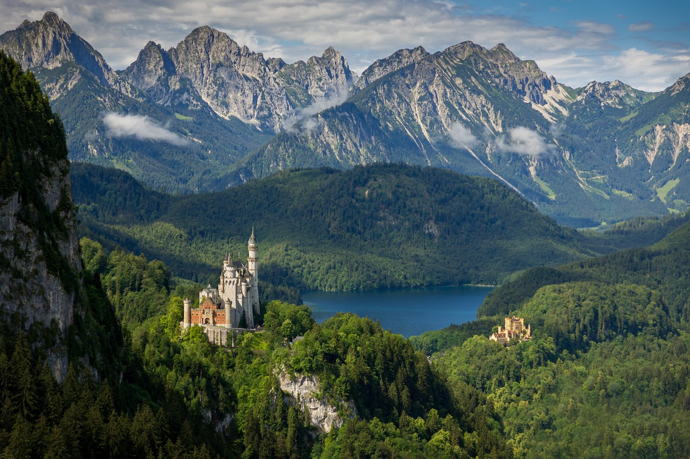
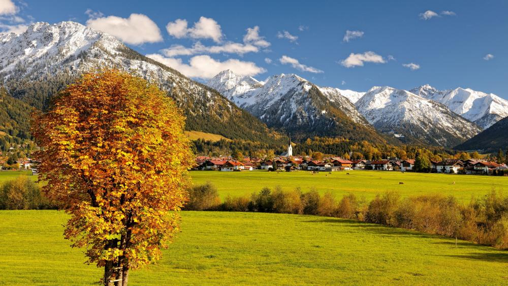
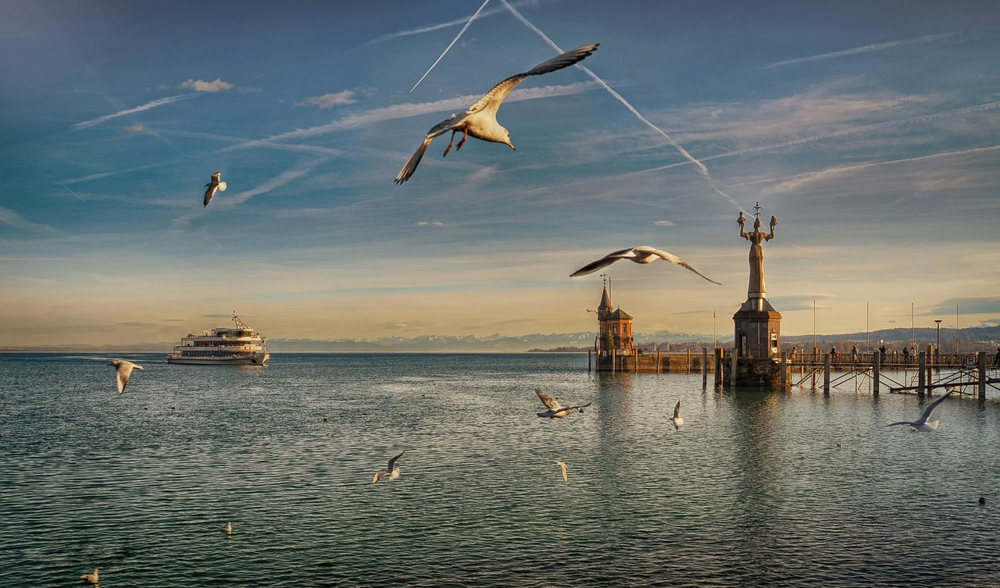

Allgäu
Das Allgäu, eine Region in Süddeutschland, erstreckt sich über Teile der Bundesländer Bayern und Baden-Württemberg sowie angrenzende Gebiete Österreichs. Bekannt für seine atemberaubende Landschaft und seine vielfältigen Freizeitmöglichkeiten.
Mit einer Geschichte, die bis ins Mittelalter zurückreicht, ist das Allgäu reich an kulturellem Erbe und traditioneller Lebensweise. Die idyllischen Dörfer, malerischen Städte und imposanten Schlösser prägen das Bild der Region und laden Besucher ein, in die Geschichte einzutauchen.
Zu den herausragenden Sehenswürdigkeiten im Allgäu gehört das Schloss Neuschwanstein, eine der bekanntesten und meistbesuchten Touristenattraktionen Deutschlands. Das Schloss, das von König Ludwig II. von Bayern erbaut wurde, beeindruckt mit seiner märchenhaften Architektur und seiner Lage hoch oben auf einem Felsen.
Die Region bietet eine Fülle von Freizeitmöglichkeiten für Naturliebhaber und Outdoor-Enthusiasten. Von Wandern und Radfahren in den Bergen bis hin zu Wassersportaktivitäten auf den zahlreichen Seen gibt es für jeden Geschmack etwas zu erleben. Im Winter locken die Allgäuer Alpen mit erstklassigen Skigebieten und Langlaufloipen.
Dank seiner zentralen Lage ist das Allgäu gut an das Verkehrsnetz angebunden und leicht zu erreichen. Die Region bietet eine Vielzahl von Unterkünften, von gemütlichen Pensionen bis hin zu luxuriösen Wellnesshotels, die einen komfortablen Aufenthalt garantieren.
Insgesamt ist das Allgäu nicht nur ein Ort von landschaftlicher Schönheit, sondern auch eine Region, die mit ihrer Vielfalt an Aktivitäten und Sehenswürdigkeiten Besucher aus aller Welt anzieht.
Unsere TOP 3 Empfehlungen für Sie
Neuschwanstein
Das Schloss Neuschwanstein ist ein ikonisches Wahrzeichen des Allgäus und eine der meistbesuchten Touristenattraktionen Deutschlands. Mit seiner märchenhaften Architektur und seiner spektakulären Lage hoch oben auf einem Felsen bietet das Schloss einen unvergesslichen Anblick. Besucher können an Führungen teilnehmen, um mehr über die Geschichte und die Geheimnisse des Schlosses zu erfahren.
Oberstdorf
Oberstdorf ist ein malerischer Kurort und Wintersportort im Allgäu, der sowohl im Sommer als auch im Winter Besucher aus aller Welt anzieht. Umgeben von imposanten Bergen und idyllischen Tälern bietet Oberstdorf eine Vielzahl von Freizeitmöglichkeiten, darunter Wandern, Skifahren, Snowboarden und vieles mehr. Das charmante Stadtzentrum lädt zum Bummeln und Verweilen ein.
Bodensee
Der Bodensee, auch als "Schwäbisches Meer" bekannt, ist ein beeindruckendes Gewässer, das das Allgäu mit seinen angrenzenden Regionen verbindet. Mit seinen malerischen Ufern, historischen Städten und vielfältigen Freizeitmöglichkeiten ist der Bodensee ein beliebtes Reiseziel für Erholungssuchende und Wassersportler gleichermaßen. Bootstouren, Radfahren entlang des Ufers und Entspannen am Strand sind nur einige der Aktivitäten, die am Bodensee geboten werden.